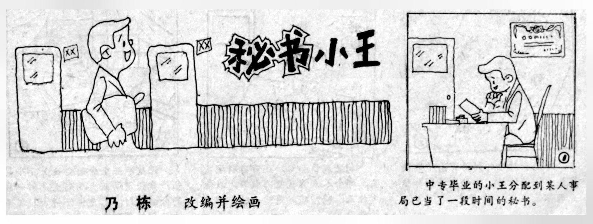

乃栋改编、绘画 《人事》1988年第5期（总第32期），第29页
秘书小王
Secretary Xiao Wang
- Panel text
- 中专毕业的小王分配到某人事局已当了一段时间的秘书。
1. Xiao Wang, a technical-school graduate, had been assigned to a certain personnel bureau and had worked there as a secretary for some time.
- 中专毕业的小王分配到某人事局已当了一段时间的秘书。
- Description
- Thirteen-panel picture story printed along the foot of five pages: a young secretary in a personnel bureau, told he lacks independence, drafts the graduate-assignment plan strictly by his bureau chief's words — and so sends the chief's own son to a mine.
- Note
- 批语, the leader's written comment in a cadre's evaluation, follows a person through his career. Graduates of technical schools were assigned jobs by plan; keeping a graduate in a comfortable unit (截留) instead of sending him to the front line was a common abuse.
- Artist
- Nai Dong 乃栋 (adapted and drawn)
- Published in
- 《人事》1988年第5期（总第32期）, p. 29
- Themes
- Paperwork and documents · Nepotism · Bureaucratism · Picture stories (连环画)

Cite
Nai Dong, “秘书小王” [Secretary Xiao Wang], Renshi (Personnel) 《人事》, 1988, no. 5, p. 29.